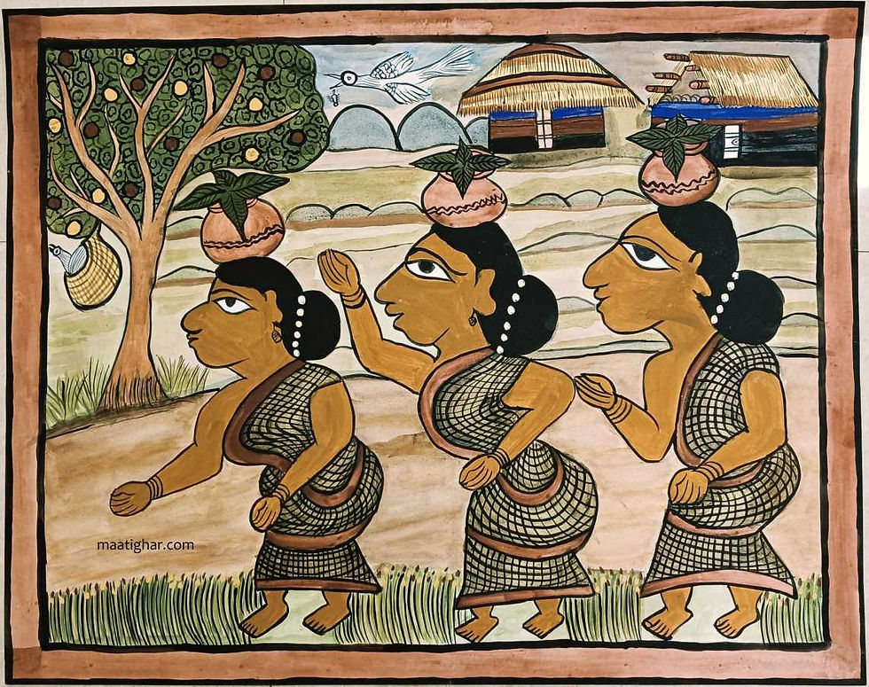
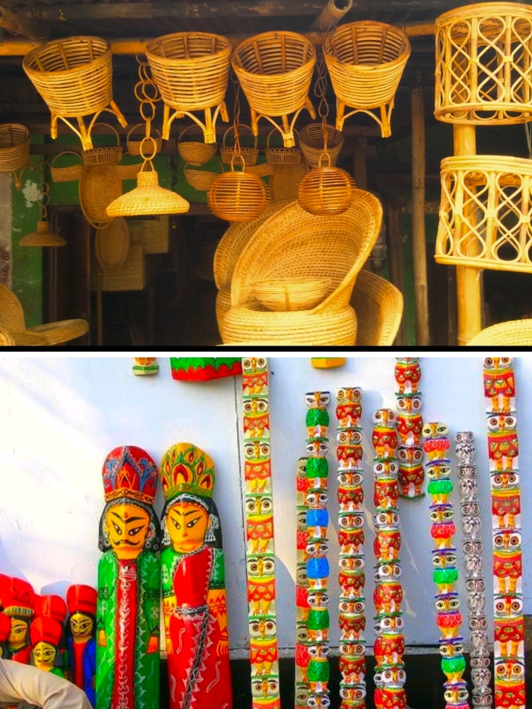
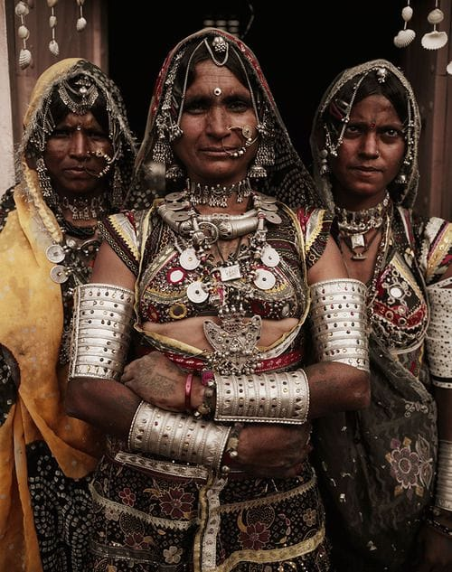
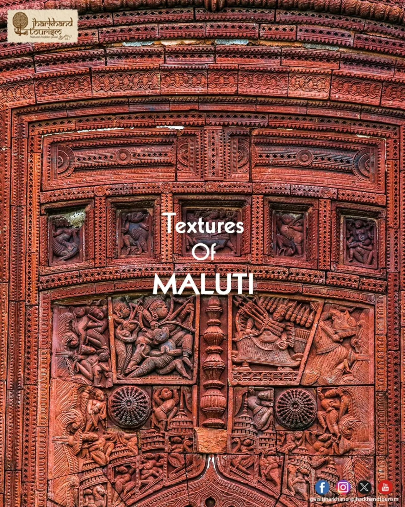

Traditional Art Forms & Traditions
Discover the techniques, history, and cultural significance behind Jharkhand's crafts

Dokra Non-Ferrous Metal Casting
Dokra (also spelled Dhokra) is a 4,000-year-old metal casting technique preserved by the traditional metalworkers of Jharkhand, primarily the Malhar and Bhumij tribes. Utilizing the ancient lost-wax technique (cire perdue), artisans build intricate clay cores wrapped in beeswax threads to sculpt detailed patterns before pouring molten brass or bronze into the mold.
Because each clay mold is broken open to extract the final metal object, no two Dokra artifacts are identical. Typical items include tribal deities, elephants, oil lamps, measuring bowls, and ceremonial jewelry—celebrated worldwide for their rustic, hand-carved textures.

Sohrai & Khovar Wall Murals (GI Tagged)
Indigenous to the Hazaribagh region, Sohrai and Khovar are traditional ritualistic wall paintings practiced exclusively by tribal women. Khovar art is painted during the marriage season (between February and June) to bless newlyweds with fertility and prosperity, whereas Sohrai art is created during the harvest festival in winter to express gratitude toward cattle and nature.
These artworks are painted on mud walls using natural earth soils—red ochre (Geru), yellow silt (Dhudhi), charcoal black, and white clay. Women apply layers of clay and use wild twigs, broken combs, or cloth rags to scratch intricate animal, floral, and geometric motifs into the wet surface.

Paitkar Folk Scroll Paintings
Practiced primarily in the Amadubi village of East Singhbhum district, Paitkar is recognized as one of the oldest scroll painting traditions in India. Historically created by the Gayen community, these scrolls tell epic stories of tribal folklore, local deities, and human values through sequential visual frames.
Artisans manufacture their own natural pigments derived from tree bark, leaves, stone dust, and river minerals. Traditionally, these painted scrolls were accompanied by vocal storytelling, where artists traveled between villages singing ballads associated with each painted panel.

Wood And Bamboo Crafts
Deeply intertwined with the dense forest ecosystem of the Chota Nagpur plateau, tribal artisans excel at converting bamboo and native hardwoods into durable household utilities, musical instruments (such as the Mandar and Dhak drums), and decorative items.
These crafts often feature intricate patterns and traditional designs inspired by tribal life and the surrounding natural environment. Bamboo is particularly valued for its flexibility, strength, and availability in the region. Beyond their practical use, these handmade creations serve as a symbol of the close relationship between the tribal communities and nature.

Chhau Masks
In regions like Seraikela, craftsmen create elaborate paper-mâché and clay masks worn during the world-renowned Seraikela Chhau Dance. These colorful, expressive masks represent mythological figures and tribal spirits, blending fine sculpture with performance tradition.
Chhau masks are traditional masks used in Jharkhand’s Chhau dance. They are made by skilled artisans using clay, paper, and natural colors. The masks feature bright colors, bold expressions, and decorative designs. They represent characters from mythology, folklore, and nature. These masks add beauty and emotion to Chhau performances while showcasing Jharkhand’s rich cultural heritage.

Tribal Ormanent
Deeply imbued in symbolism is yet another celebrated craft of Jharkhand, and that is the indigenous tribal ornaments. Tribal jewellery not only informs us about the skills of the makers involved in jewellery-making but also about the socio-ethnic groups associated with it. These jewels are made from humble and accessible raw materials like silver and beads. They not only carry a rustic charm but are also pretty sophisticated to look at. It is a matter of pride to ostensibly display their well-decorated ornaments on different body parts- beginning with tikuli on their foreheads, moving to hasuli on their necks, and to kardhani on their waists, with the list being endless. While their chains hold little chimes, Santhali and Munda women also sport delicate earrings crafted in filigree and beads.

Terracotta
India has one the largest varieties of terracotta in the world, and this comes as no surprise. As far as the genesis of clay craft and terracotta in Jharkhand is concerned, the tradition can be dated back to the Mauryan period. Terracottas are the earthenwares which are obtained by baking the red clay. Just like in many parts of Northern India, it is the Kumhars or the potters, who are responsible for carving and firing the clay figurines and items into functional or decorative pieces. From birds, elephants and horses to water jars, vases, and lamps. These decorative items can also contain potent meanings. For example, horses are associated with power and strength.